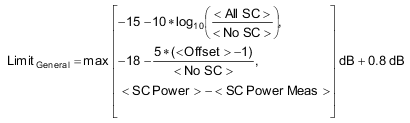
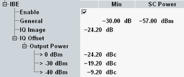

The inband emission is the relative UE output power in non-allocated subcarriers (SCs). Inband emissions are interferers in the subcarrier range that is potentially used by other connected UEs. 3GPP defines a complex combined inband emission limit described below.
- The minimum of the combined limit is -30 dB. In the R&S CMW, this general minimum is configurable.
- A general component is considered for all non-allocated SCs.
- For non-allocated SCs at image frequencies of allocated SCs, an IQ image component is added to the general component.
- For SCs at the carrier frequency or next to the carrier frequency, an IQ offset component is added to the general component.
So the most complex limit must be determined for a non-allocated SC located both at an image frequency and next to the carrier frequency. In that case, the general component, the IQ image component and the IQ offset component have to be added. Then the result must be compared to the general minimum and the bigger value of both applies.
The following table provides an overview of the three components.
Component | Value | Applicable SCs |
|---|---|---|
General | See formula below table | Non-allocated SCs |
IQ image | -24.2 dB | Image frequencies |
IQ offset | -24.2 dBc to -9.2 dBc, depending on TX power | Carrier frequency |
The general limit is derived using the following formula:

- <All SC> = total number of subcarriers within the channel bandwidth
- <No SC> = number of allocated subcarriers
- <Offset> = distance of the SC from the closest allocated SC
- <SC Power> = -57 (configurable)
- <SC Power Meas> = arithmetic mean value of the average powers in all allocated subcarriers (dBm/subcarrier)
The general minimum, the variable <SC Power>, the IQ image component and the IQ offset component can be set in the configuration dialog.
